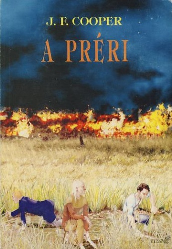

Bőrharisnya-sorozat
A préri
Ishmael Bush és családja a prérire mennek, új föld reményében. Találkoznak az öreg trapperrel, aki segít nekik megfelelő táborhelyet találni. Sziú indiánok elhajtják a jószágaikat. Ishmael legnagyobb fiát lelövik. Az öreg trapper, Paul és a doktor találkoznak egy tüzérszázadossal, Duncan Uncas Middletonnal, aki az öreg trapper egyik régi ismerősének a leszármazottja. Kiderül, hogy a Bush család fogva tartja Middleton menyasszonyát, Ines de Cartvallost. Miközben Bush, a felesége, a sógora és a fiai Asát keresik, az öreg trapper és barátai kiszabadítják Inest. Ellennel és Inessel együtt menekülnek a sziúk és Bushék elől. Végül eljutnak a páni indiánok táborába. Paul, Ellen, a százados, Ines és a doktor visszatérnek a civilizált életbe. Az öreg trapper fél év múlva meghal.
Forrás: wikipedia
Könyvek

A varázslók
A többi fiatalhoz hasonlóan Quentin Coldwater sem hisz a varázslatokban egészen addig, míg egy zártkörű és titkos egyetem hallgatója nem lesz New York egy eldugott részében. S noha a tanulás évei úgy telnek, mint bárhol máshol – barátokra tesz szert, rendszeresen lerészegedik, majd idővel lefekszik valakivel, akibe beleszeret –, a titkos tudás örökre megváltoztatja őt. Kitűnően sajátítja el a modern varázstudományt, ám a szíve mélyén mindig is vágyott nagy kalandot és boldogságot nem kapja meg hozzá. Egy nap a barátaival azonban felfedeznek valami hatalmasat, ami mindent megváltoztathat.

A varázslókirály
Quentin és barátai elfoglalták Filloryt, királyokként és királynőkként uralkodnak a mesés világ felett, ahol semmi dolguk nincs, mint élvezni a hőstörténetek végén jutalmul járó boldogságot és vagyont. Egy nap azonban a felhőtlen uralkodásnak vége szakad: előbb a mágikus órafákkal történik valami borzalmas, majd kisvártatva egy nyúl halált és pusztulást jósol a világra. Quentin hajóra száll Juliával, hogy a rejtély végére járjon, azonban Filloryt elhagyva még ő sem sejti, hogy a varázslás és ezzel együtt minden varázslatos dolog mekkora veszélybe került, az idejük pedig már jócskán fogytán van.

Card title
Quentin Coldwatert száműzték Filloryból, a mesés világból, amiben hitt és amit egész életében keresett. Vesztenivaló híján most visszatér varázslatos utazásainak kiindulópontjába, a Varázskapu Egyetemre, ám nem telik el sok idő, és a múlt kísérteni kezdi. Egy ragyogó elméjű fiatal egyetemistával együtt hamarosan útra kel, előbb az Antarktiszra, ahol régi barátokkal találkozik, majd egy szürke mágiával és elkeseredett, kétes alakokkal teli világba. Eközben Fillory mágikus határai gyengülni kezdenek, és északról egy barbár sereg támadást indít ellene. Eliotnak és Janetnek - Filloy királyának és királynőjének - hajóra kell szállniuk, hogy elvégezzenek egy veszélyes, utolsó küldetést.
Fejezetek
- Quentin Coldwate
- Alice Quinn
- Julia Wicker
- Eliot Waugh
- Margo Hanson
- Penny Adiyodi

Magyar kiadás
| ISBN | Megjelenés | Cím | Oldalakszáma |
|---|---|---|---|
| 9786155522895 | Avarázslók | 2015 | 448 |
| 9786155522895 | Avarázslókirály | 2015 | 416 |
| 9789634190516 | Avarázslóbirodalma | 2016 | 416 |